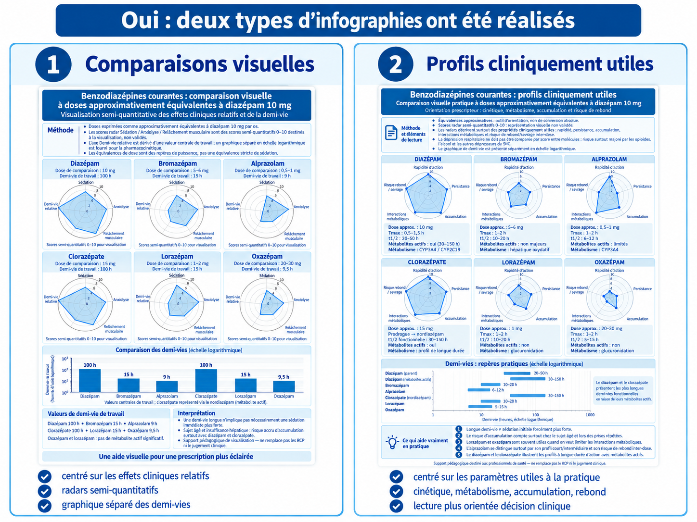
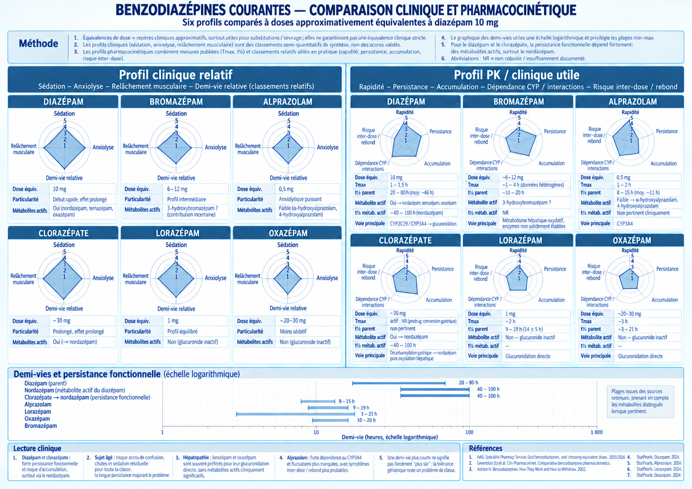

Benzodiazépines : infographies
Deux types d'infographies

Comparaison clinique et pharmacocinétique

Cliquez sur une image pour l'ouvrir en taille réelle.


Cliquez sur une image pour l'ouvrir en taille réelle.